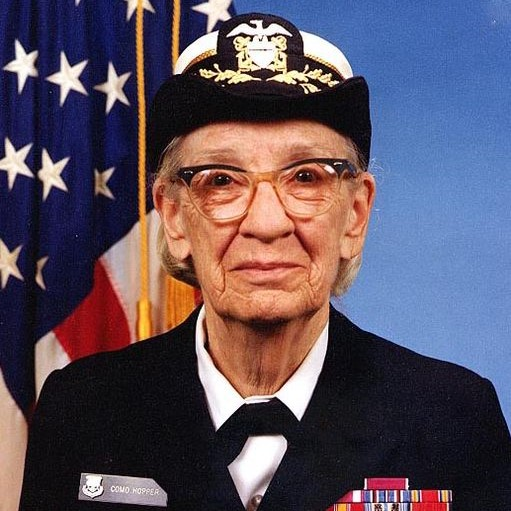

Grace Murray Hopper was a well know computer programmer know for her innovation and trailblazing contributions to the computer science workspace especially in relations to programming. Some of her largest accommplishments were her contributions to some of the most well known computers in history and the first programming languages to use words instead of symbols.
